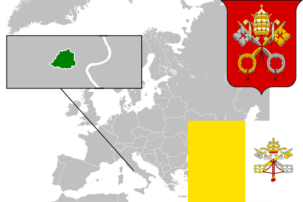

To`liq nomi: Vatikan shahri
Region: Yevropa
Qonunchilik shakli: Mutloq monarxiya
Mustaqillik kuni: 11-fevral 1929-yil (Italiyadan)
Poytaxt: Vatikan
Maydoni: 0.44 km² (dunyoda 276 -o`rinda )
Chegaradosh davlatlari: Italiya
Aholisi: 1000 (dunyoda 241 - o`rinda, 2014 -yil roʻyxat)
Aholi zichligi: 1913,3/km²
Aholining o`rtacha yoshi: 73,35 yil (76,5 ayollar, 70,2 erkaklar)
Rasmiy tili: italyan va lotin tili
Dini: katolik
Pul birligi: yevro
Telefon prefiksi: +39
Internet domen: .va
Xalqaro tashkilotlarga a`zoligi: -
Dengiz va okeanlarga chiqishi: yo`q
YIM: Ma`lumot berilmagan
Yirik shaharlari: -